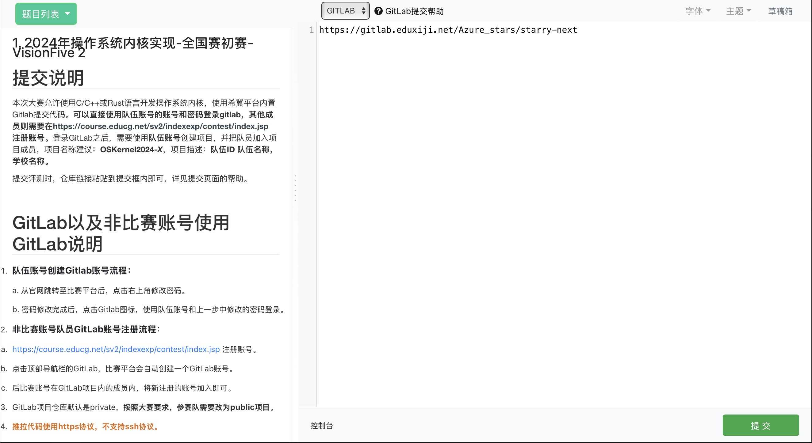

运行 OS 比赛测例
OS 比赛介绍
本章节所提到的比赛是指全国大学生计算机系统能力大赛内核实现赛，简称 OS 比赛内核实现赛道。该赛道主要考察内核的功能实现，要求内核运行给定的测试用例，并根据通过测例的数量获得相应的分数。
测试环境准备
为了运行比赛测例，我们需要准备开发环境和比赛所用的测例镜像。
准备测例镜像
预编译好的测例镜像详见 testsuit-for-oskernel。其中包括了四种指令架构。当运行时如果没有检测到对应的镜像，会自动进行下载。
另外也可以使用如下指令，提前将测例镜像下载到本地：
wget https://github.com/Azure-stars/testsuits-for-oskernel/releases/download/v0.1/sdcard-aarch64.img.gz
wget https://github.com/Azure-stars/testsuits-for-oskernel/releases/download/v0.1/sdcard-loongarch64.img.gz
wget https://github.com/Azure-stars/testsuits-for-oskernel/releases/download/v0.1/sdcard-riscv64.img.gz
wget https://github.com/Azure-stars/testsuits-for-oskernel/releases/download/v0.1/sdcard-x86_64.img.gz
gunzip sdcard-aarch64.img.gz
gunzip sdcard-loongarch64.img.gz
gunzip sdcard-riscv64.img.gz
gunzip sdcard-x86_64.img.gz
准备开发环境
请参考 实验环境配置 完成开发环境的配置。
另外也可以执行如下指令拉取赛事评测环境镜像并且启动容器（和本地环境二者选其一即可）
$ docker pull docker.educg.net/cg/os-contest:20250226
$ docker run --rm --privileged -w /work -v $(pwd):/work docker.educg.net/cg/os-contest:20250226 bin/bash
本地运行 OS 比赛测例
在当前的 Starry 主线代码上，执行如下指令：
$ ./scripts/get_deps.sh
# 执行 RISC-V 架构的 OS 比赛测例
$ make oscomp_run ARCH=riscv64
# 执行 Loongarch64 架构的 OS 比赛测例
$ make oscomp_run ARCH=loongarch64
即可完成 OS 比赛测例的运行。
在赛事平台上运行 OS 比赛测例
OS 赛事环境介绍
我们以 2025 年赛事为例介绍初赛的执行环境和评测相关流程。
评测环境
执行环境由 Docker 构建而成，相关的 dockerfile 可见该链接。该文档撰写时所描述的环境对应如下：
docker 镜像实例为 docker.educg.net/cg/os-contest:20250214。
评测用例
评测用例源码为：https://github.com/oscomp/testsuits-for-oskernel/tree/pre-2025。按照 README 进行编译之后可以得到 sdcard 文件夹，目录结构如下：
sdcard
├── loongarch
│ ├── glibc
│ └── musl
└── riscv
├── glibc
└── musl
其中 loongarch64 和 riscv64 会在开始评测之后分别压缩为 sdcard-la.img 和 sdcard-rv.img 拷贝到项目的根目录下，进行评测。压缩指令为：
dd if=/dev/zero of=sdcard-rv.img count=128 bs=1M
mkfs.ext4 sdcard-rv.img
mkdir -p mnt
mount sdcard-rv.img mnt
cp -rL sdcard/riscv/* mnt
umount mnt
gzip sdcard-rv.img
dd if=/dev/zero of=sdcard-la.img count=128 bs=1M
mkfs.ext4 sdcard-la.img
mkdir -p mnt
mount sdcard-la.img mnt
cp -rL sdcard/riscv/* mnt
umount mnt
gzip sdcard-la.img
评测流程
 当在比赛平台上提交了内核代码所在的仓库 URL 和分支（点击上图的提交按钮之后)，平台会执行如下流程开始进行评测：
-
拉取内核仓库的代码
-
自动在项目根目录中执行
make all命令，期望生成 kernel-rv 和 kernel-la 两个文件，分别是内核在 riscv64 架构和 loongarch64 架构下编译生成的可执行文件。 -
评测机会将测例所打包成的镜像（sdcard-rv.img 和 sdcard-la.img）拷贝到根目录下，SD 卡镜像为 ext4 文件系统。在 SD 卡镜像的根目录里包含若干个预先编译好的 ELF 可执行文件（以下简称测试点）。
-
启动 QEMU，开始运行内核并且读取 SD 卡镜像进行测试。运行指令如下：
$ qemu-system-riscv64 -machine virt -kernel ./kernel-rv -m 2G -nographic -smp 2 -bios default -drive file=sdcard-rv.img,if=none,format=raw,id=x0 \ -device virtio-blk-device,drive=x0,bus=virtio-mmio-bus.0 -no-reboot -device virtio-net-device,netdev=net -netdev user,id=net \ -rtc base=utc \ -drive file=disk.img,if=none,format=raw,id=x1 -device virtio-blk-device,drive=x1,bus=virtio-mmio-bus.1 $ qemu-system-loongarch64 -m 1G -smp 1 -kernel ./kernel-la -device virtio-blk-pci,drive=disk0 -drive id=disk0,if=none,format=raw,file=sdcard-la.img -no-reboot -device virtio-net-pci,netdev=net0 -netdev user,id=net0 -nographic -rtc base=utc \ -drive file=disk-la.img,if=none,format=raw,id=x1 -device virtio-blk-pci,drive=x1 -
当操作系统执行完所有测试点后，应该主动调用关机命令，评测机会在检测到 QEMU 进程退出后进行打分。
关于作品的评分方式如下：
- 操作系统在启动后需要主动扫描SD卡，并依次运行其中每一个测试点，将其运行结果输出到串口上，评测系统会根据您操作系统的串口输出内容进行评分。
- 选手可以根据操作系统的完成度自由选择跳过其中若干个测试点，未被运行的测试点将不计分。
- 测试点的执行顺序与评分无关，多个测试点只能串行运行，不可同时运行多个测试点。
- 具体测试点的数量、内容以及编译方式将在赛题公布时同步发布，2024 年的初赛测例详见这里
特殊注意点
-
除去拉取代测代码之后，应当认为评测机无法访问外部网络。任何访问外部网络尤其是国外网站的操作很容易导致编译或运行超时而无法完成评测。
-
评测机在构建前会默认无视项目的所有隐藏目录（以
.开头的文件或目录），若需要使用这部分的配置（如.cargo）需要自身手动在运行时进行配置（如将.cargo目录下所有内容保存在cargo_temp目录下，并在构建时拷贝cargo_temp到.cargo目录下。
Starry 对评测环境的适配
为了能够在评测环境上对 Starry 进行测试，需要进行相关的适配。适配后的代码详见 starry-next-gitlab。您可以直接提交这份代码，进行平台评测的体验。
请注意：这份代码仅是 demo，因此仅测试了最简单的几个测例，并不与 Starry 的主线保持一致。
接下来是对适配原理的介绍，如果同学们对它感兴趣，可以继续阅读。这有助于大家将自己的内核适配到评测环境上。否则可以跳过本章节剩下的所有内容。
相关适配工作如下：
本地化依赖处理
我们默认评测机无法访问外部网络，因此需要保证整个内核构建过程需要完全脱离网络进行。为此我们需要进行如下配置：
-
cargo 依赖本地化：通过执行
cargo vendor基于当前的Cargo.lock文件预先将所有需要的依赖文件下载到本地的 vendor 文件夹下。当指令执行完成之后，会在终端输出一系列 patch 信息，如下。[source.crates-io] replace-with = "vendored-sources" [source."git+https://github.com/Azure-stars/lwext4_rust.git"] git = "https://github.com/Azure-stars/lwext4_rust.git" replace-with = "vendored-sources" [source."git+https://github.com/arceos-org/allocator.git?tag=v0.1.1"] git = "https://github.com/arceos-org/allocator.git" tag = "v0.1.1" replace-with = "vendored-sources" [source."git+https://github.com/arceos-org/axdriver_crates.git?tag=v0.1.0"] git = "https://github.com/arceos-org/axdriver_crates.git" tag = "v0.1.0" replace-with = "vendored-sources" [source."git+https://github.com/arceos-org/linked_list.git?tag=v0.1.0"] git = "https://github.com/arceos-org/linked_list.git" tag = "v0.1.0" replace-with = "vendored-sources" [source."git+https://github.com/arceos-org/scheduler.git?tag=v0.1.0"] git = "https://github.com/arceos-org/scheduler.git" tag = "v0.1.0" replace-with = "vendored-sources" [source."git+https://github.com/jasonwhite/syscalls.git?rev=92624de"] git = "https://github.com/jasonwhite/syscalls.git" rev = "92624de" replace-with = "vendored-sources" [source."git+https://github.com/rafalh/rust-fatfs?rev=85f06e0"] git = "https://github.com/rafalh/rust-fatfs" rev = "85f06e0" replace-with = "vendored-sources" [source."git+https://github.com/rcore-os/smoltcp.git?rev=2ade274"] git = "https://github.com/rcore-os/smoltcp.git" rev = "2ade274" replace-with = "vendored-sources" [source."git+https://github.com/yfblock/page_table_multiarch.git?rev=c8a13b0"] git = "https://github.com/yfblock/page_table_multiarch.git" rev = "c8a13b0" replace-with = "vendored-sources" [source.vendored-sources] directory = "vendor"我们需要将这部分的 patch 信息添加到
.cargo/config.toml中，用于指示 cargo 在构建时利用本地 vendor 文件夹进行构建，而不再需要通过 cargo cache 或云端下载。相关文档详见Configuration。 -
使用评测环境指定的工具链：我们需要指定构建工具链为评测镜像中提供的工具链，从而避免下载新的工具链导致的构建超时问题。
目前镜像中的工具链为
nightly-2024-02-03与nightly-2025-01-18两类，分别需要 rust edition 2021 和 rust editon 2024。截止该文档撰写时，Starry 尚未迁移到 rust edition 2024，因此先适配nightly-2024-02-03工具链版本。之后我们会将 Starry 迁移到 edition 2024。rustup 在构建时若未显式指定当前的 toolchain，会自动尝试去同步最新的工具链，出现如下输出，从而导致构建超时。
$ info: syncing channel updates for 'nightly-2024-02-03-x86_64-unknown-linux-gnu'为了解决工具链问题，我们需要手动指定工具链，相关文档详见 Override。我们选择手动指定
RUSTUP_TOOLCHAIN环境变量。因此我们在 Makefile 做了如下设置：all: RUSTUP_TOOLCHAIN=nightly-2025-01-18 $(MAKE) test_build ARCH=riscv64 AX_TESTCASE=oscomp BUS=mmio FEATURES=lwext4_rs ... RUSTUP_TOOLCHAIN=nightly-2025-01-18 $(MAKE) test_build ARCH=loongarch64 AX_TESTCASE=oscomp FEATURES=lwext4_rs
隐藏目录处理
隐藏目录的处理在 starry-next 中包括两个部分：.cargo与.arceos处理
-
.cargo处理：在 starry-next 中需要指定依赖的 patch 信息（包括 arceos 基座和 vendor 信息），这些需要配置在.cargo/config.toml中。在 starry-next 中，我们通过如下方式构造.cargo/config.toml- 在
./scripts/config.toml.temp中书写config.toml所需要的内容 - 执行
./scripts/set_ax_root.sh创建.cargo目录并写入config.toml
因此我们提交的内容本就不包括
.cargo文件夹，无需额外处理，只需要维护好config.toml.temp即可。NOTES：在本地化依赖处理 中要求将 vendor 信息加入到
config.toml，在 Starry 中应当是加入到./scripts/config.toml.temp中，详见config.toml.temp。 - 在
-
.arceos处理：Starry 并不是一个完整的内核，而是一个内核插件，需要在构建时拉取 arceos 仓库作为内核基座，完成整个系统的构建（关于两者的关系和运行原理详见Starry概述）。由于我们默认评测机无法访问外部网络，且无法识别隐藏文件，因此需要做出如下适配。-
直接将 arceos 的相关代码拉取到项目文件夹中，作为项目的一部分进行提交，而不再是通过
.scripts/get_deps.sh进行拉取。相关代码详见arceos。在将来可以为这一步写一个自动化脚本，每次提交时自动同步对应的 arceos 代码到根目录下
-
原来默认的内核基座目录是
.arceos，需要改为非隐藏目录，因此需要对项目构建时的AX_ROOT变量进行修改，从.arceos修改为arceos，相关修改详见Makefile和get_deps.sh。
-
安装必要依赖
ArceOS 构造过程需要axconfig-gen依赖，该包需要由cargo install 下载，我们需要将其下载到本地。在赛事使用的 docker 中需要将 axconfig-gen 的可执行文件拷贝到环境变量中，因此有如下操作。
# 在本地项目根目录下安装该依赖
$ cargo install --root . axconfig-gen
# 下载完毕之后，会在根目录下生成 bin/axconfig-gen
# 在 赛事 docker 中需要将可执行文件加入到环境变量，详见 Makefile 的 test_build 目标
$ cp bin/* ${CARGO_BIN_PATH}
总结
为了适配评测环境，需要做出如下改动：
- cargo vendor 并添加 patch 信息到
config.toml.temp（注意不是.cargo/config.toml，相关原因见隐藏目录) - 用环境变量
RUSTUP_TOOLCHAIN显式指定评测所需的工具链 - 将 arceos 代码直接作为项目下文件夹一并提交，而不再是远程下载
- 修改
AX_ROOT变量为arceos - 安装依赖并拷贝到环境变量中
对应的可评测代码为 starry-next-gitlab。
Docker 模拟赛事评测环境
我们可以使用 Docker 来模拟赛事的评测环境，从而在本地判断环境配置是否有问题。
在项目仓库目录下执行如下指令：
$ docker pull docker.educg.net/cg/os-contest:20250226
$ docker run --rm --privileged -w /work -v $(pwd):/work docker.educg.net/cg/os-contest:20250226 bin/bash
# 在 docker 中
$ make all
执行完上述指令之后，会在项目根目录下生成 kernel-la 和 kernel-rv 两个文件。接下来在 docker 分别执行如下两个指令
$ qemu-system-riscv64 -machine virt -kernel ./kernel-rv -m 2G -nographic -smp 2 -bios default -drive file=sdcard-rv.img,if=none,format=raw,id=x0 \
-device virtio-blk-device,drive=x0,bus=virtio-mmio-bus.0 -no-reboot -device virtio-net-device,netdev=net -netdev user,id=net \
-rtc base=utc
$ qemu-system-loongarch64 -m 1G -smp 1 -kernel ./kernel-la -device virtio-blk-pci,drive=disk0 -drive id=disk0,if=none,format=raw,file=sdcard-la.img -no-reboot -device virtio-net-pci,netdev=net0 -netdev user,id=net0,hostfwd=tcp::5555-:5555,hostfwd=udp::5555-:5555 -nographic
即可在 Docker 中运行赛事测例。
当完成了上述测试，即可将本地代码提交到仓库，并按照上述流程在赛事平台上测试。